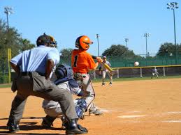

FINAL WEBSITE

Baseball has long been known as America's national pastime, but recent years have witnessed a significant decline in participation rates among young people. According to recent surveys, the number of children aged 6 to 12 who played baseball dropped by 40% between 2000 and 2013. This research report aims to explore the reasons behind the decline in youth baseball and propose potential solutions to address the issue.
There are 5 main reasons why baseball is slowly disappearing from the youth:
One of the primary reasons for the decline in youth baseball is the changing demographics of the United States. The country is becoming increasingly diverse, and many young people from ethnic minority backgrounds may not have grown up with baseball as a cultural tradition. Baseball has long been viewed as a sport for white Americans, and as the population becomes more diverse, other sports may become more appealing to young people. According to a report by the Aspen Institute, baseball has lost its position as the most popular team sport in America, with basketball, soccer, and football now being more popular among young people. As baseball continues to struggle with diversity and inclusion, it may lose even more ground to these other sports.
“From what I’ve learned from this generation, children want things now, and they want them to be meaningful. When all is said and done, people want to know that they were a part of a game or a situation that contributed to the end result. With baseball, you’re just not going to get that” (Piunno).
Another factor contributing to the decline of youth baseball is the increased competition from other sports, particularly soccer. In recent years, soccer has become increasingly popular among young people in the United States. The popularity of soccer may be due to its low cost of entry, as all that is needed is a ball and a flat surface to play on. Baseball, on the other hand, requires a lot of expensive equipment, including gloves, bats, and protective gear. As the cost of playing baseball rises, more young people are turning to soccer and other sports that require less equipment and are more accessible.
| Year | Share (%) |
|---|---|
| 2008 | 16.5 |
| 2009 | 15.2 |
| 2010 | 14.1 |
| 2011 | 13.3 |
| 2012 | 12.5 |
| 2013 | 14.2 |
| 2014 | 12.9 |
| 2015 | 13.2 |
| 2016 | 12.7 |
| 2017 | 13.1 |
| 2018 | 13.6 |
| 2019 | 14.4 |
| 2020 | 12.2 |
Many young people today are involved in a variety of extracurricular activities, from music lessons to dance classes to tutoring sessions. Baseball requires a considerable time commitment, with games and practices often taking up several hours each week. For many families, this can be a challenging scheduling conflict, leading to young people dropping out of the sport. Furthermore, with the rise of travel baseball teams and year-round leagues, young players are forced to choose between baseball and other activities, which may be more important to their overall development.
Another factor contributing to the decline in youth baseball is safety concerns. In recent years, there has been increasing awareness of the risks associated with concussions and other head injuries, particularly in contact sports such as football and hockey. While baseball is not a contact sport, there is still a risk of injury, particularly from flying balls or collisions on the field. Some parents may be hesitant to allow their children to play a sport with even a small risk of injury. In addition, many young people may choose to play sports that are perceived to be safer, such as basketball or soccer.
Finally, the decline in youth baseball may be due to a lack of role models. In the past, baseball was dominated by larger-than-life figures such as Babe Ruth, Ted Williams, and Jackie Robinson. Today, however, there are few players who capture the public imagination in the same way. In addition, many young people today are more interested in video games, social media, and other forms of entertainment than they are in sports. Baseball may need to find new ways to capture the attention of young people and create new heroes and role models.
In conclusion, the decline of youth baseball can be attributed to a range of factors, including changing demographics, increased competition from other sports, time commitments and scheduling conflicts, safety concerns, and a lack of role models. Addressing these issues will surely be a step in the right direction in changing the game's course. A commitment to change the way baseball is perceived by the youth by combating these 5 problems will undoubtedly bring the game back to its former glory days. The future of baseball lies in the hands of the coming generations